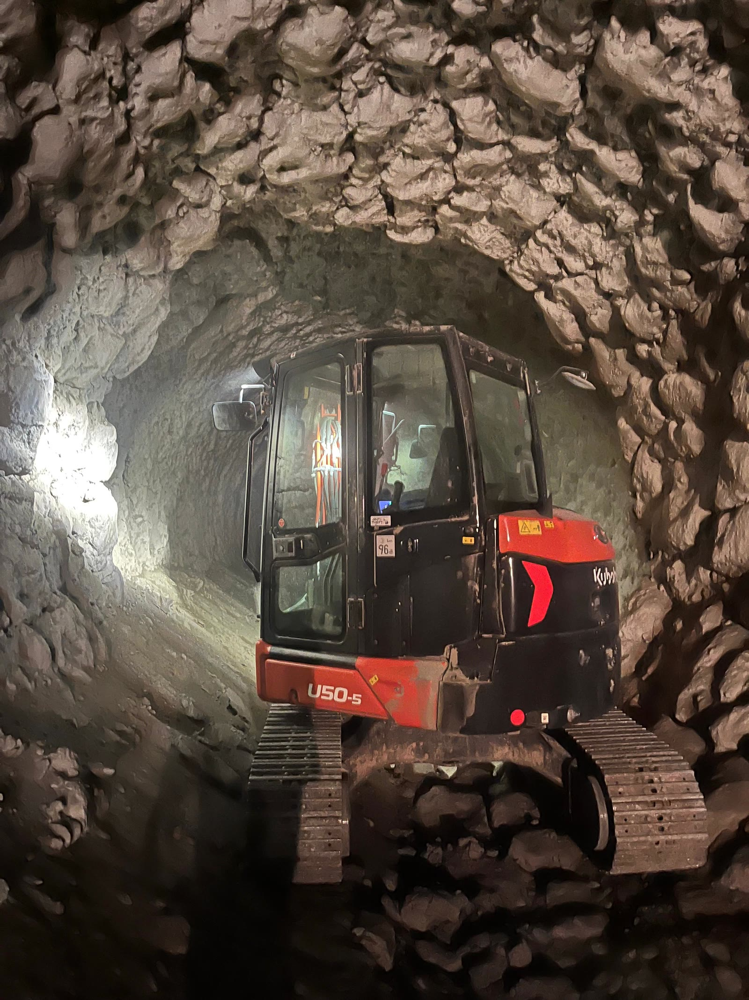
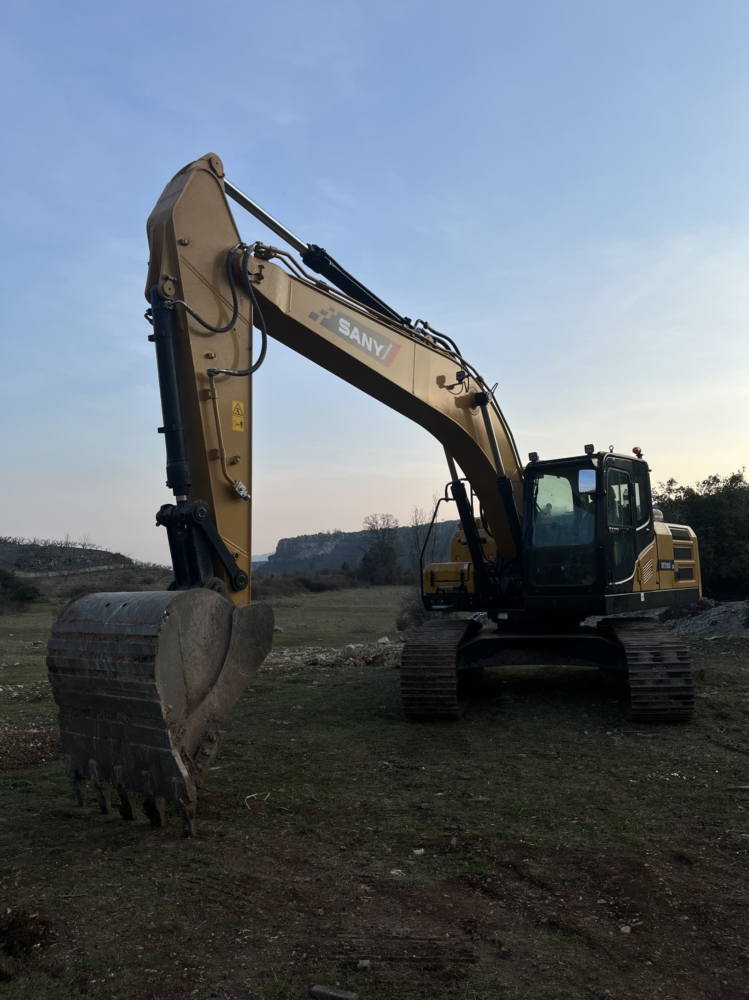
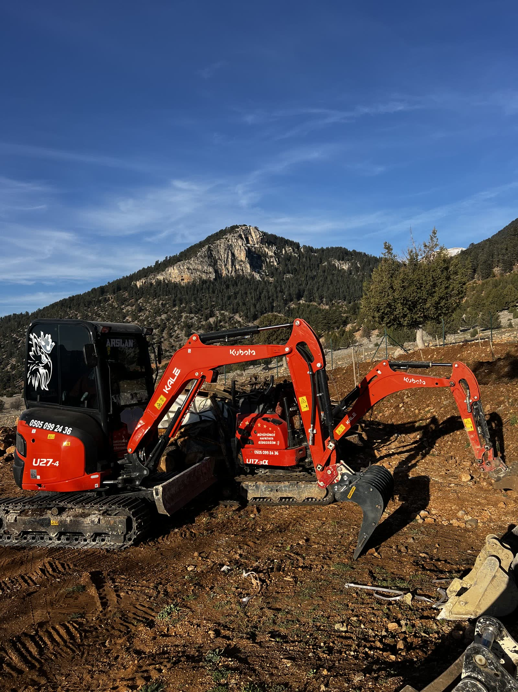
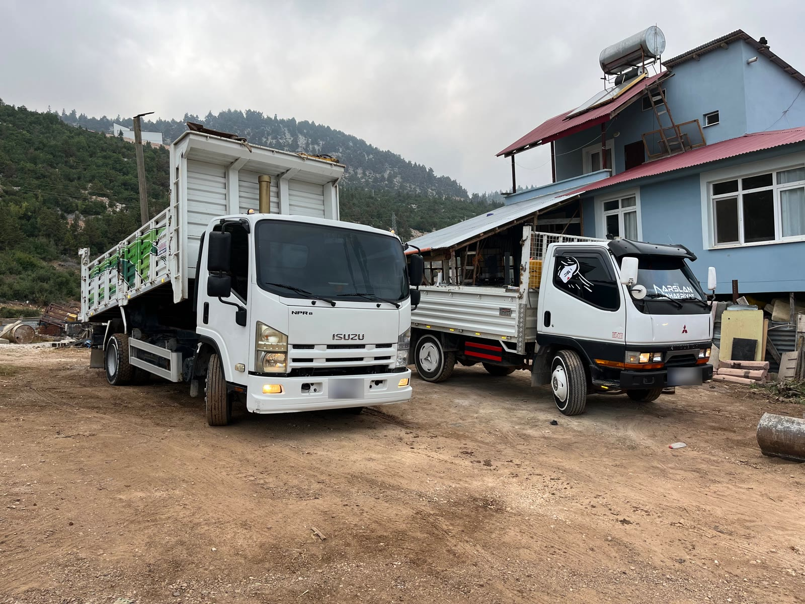
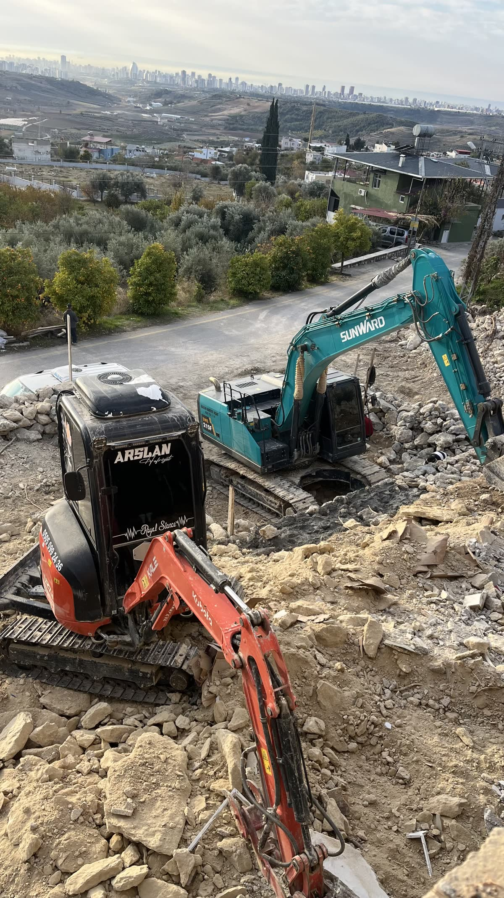
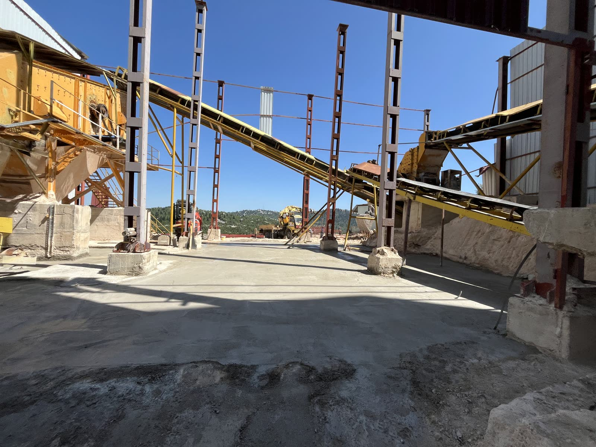

Güçlü altyapı, temiz çevre, sağlam gelecek
Endüstriyel temizlikten kazı ve hafriyata, nakliyeden inşaata kadar güçlü makine parkı ve uzman ekibimizle yanınızdayız.
Tecrübemizle bugünü inşa ediyor, gelecek nesillere daha temiz bir dünya bırakıyoruz.
Endüstriyel temizlik, kazı ve hafriyat, peyzaj, taşımacılık, bayındırlık müteahhitliği ve inşaat alanlarında; güven, kalite, tecrübe, çözüm ve sürdürülebilirlik ilkeleriyle çalışıyoruz.
Mini iş makinelerinden ağır nakliye araçlarına kadar güçlü bir makine parkına ve tecrübeli bir ekibe sahibiz. Dar ve zorlu alanlarda da çalışıyoruz.
Endüstriyel Temizlik ve Dar Alan Çalışmaları
Fabrika, tesis, bina ve tüm endüstriyel alanlarda profesyonel temizlik hizmetleri. Tünel ve dar alanlarda makineyle güvenle çalışıyoruz.
- Fabrika, tesis ve bina temizliği
- Tünel ve dar alanlarda mini iş makineleriyle çalışma

Kazı ve Hafriyat
Her ölçekte kazı, hafriyat ve dolgu işlerinizde güçlü makine parkımız ve uzman ekibimizle yanınızdayız.
- Kazı, hafriyat ve dolgu işleri
- Dar alan hafriyatı: tünel, şaft, bodrum
- Mini iş makineleriyle hızlı müdahale

Peyzaj
Yeşil alan düzenleme, peyzaj tasarımı, çevre düzenleme ve bitkilendirme hizmetleri.
- Yeşil alan düzenleme
- Peyzaj tasarımı
- Çevre düzenleme ve bitkilendirme

Taşımacılık ve Nakliye
Yük ve malzeme taşımacılığı, nakliye çözümleriyle hızlı, güvenli ve zamanında teslimat.
- Yük ve malzeme taşımacılığı
- Hızlı, güvenli, zamanında teslimat

Bayındırlık Müteahhitliği
Altyapı ve üstyapı projelerinde bayındırlık işleri taahhüt ve uygulama hizmetleri.
- Altyapı projeleri
- Üstyapı projeleri
- Taahhüt ve uygulama

İnşaat
Her ölçekte inşaat projeleri; anahtar teslim çözümlerle sağlam, modern ve güvenilir yapılar.
- Her ölçekte inşaat projeleri
- Anahtar teslim çözümler
- Sağlam, modern, güvenilir yapılar

Değerlerimiz: güven, kalite, tecrübe, çözüm, sürdürülebilirlik.
Arslan gibi güçlü, Terra gibi sağlam
Zamandan Tasarruf
Üretime en kısa sürede geri dönmenizi sağlarız.
Maksimum Güvenlik
Sıfır iş kazası hedefiyle, güvenli bir ortamda çalışırız.
Profesyonel Ekip
Tecrübeli ve dinamik kadro.
7/24 Kesintisiz Çözüm
Planlı duruşların yanı sıra plansız ve acil müdahale gerektiren durumlarda da yanınızdayız.
Sahayı havadan görün
Tesislerde yürüttüğümüz çalışmaları ve makine parkımızı kısa filmimizde izleyin.
Teklif AlAklınızdaki sorular
Yanıtını bulamadığınız bir soru olursa bize yazın.
Hangi hizmetleri veriyorsunuz?
Endüstriyel temizlik, kazı ve hafriyat, peyzaj, taşımacılık ve nakliye, bayındırlık müteahhitliği ve inşaat alanlarında hizmet veriyoruz.
Dar ve kapalı alanlarda çalışabiliyor musunuz?
Evet. Tünel, şaft, fabrika içi ve bodrum katları gibi standart iş makinelerinin giremediği alanlarda mini iş makineleriyle çalışıyoruz.
Hangi sektörlere hizmet veriyorsunuz?
Fabrika ve tesisler başta olmak üzere endüstriyel alanlara; ayrıca yapı, altyapı ve çevre düzenleme projelerine hizmet veriyoruz.
Acil durumlarda size ulaşabilir miyim?
Evet. Planlı duruşların yanı sıra plansız ve acil müdahale gerektiren durumlarda da 7/24 yanınızdayız. Telefonla ya da WhatsApp üzerinden bize ulaşabilirsiniz.
Nasıl teklif alabilirim?
Sayfadaki teklif formunu doldurabilir, WhatsApp'tan yazabilir ya da bizi arayabilirsiniz. Tesis türünü, yapılacak işi ve planlanan tarihi paylaşmanız teklifi hızlandırır.
Güçlü altyapı, temiz çevre, sağlam gelecek